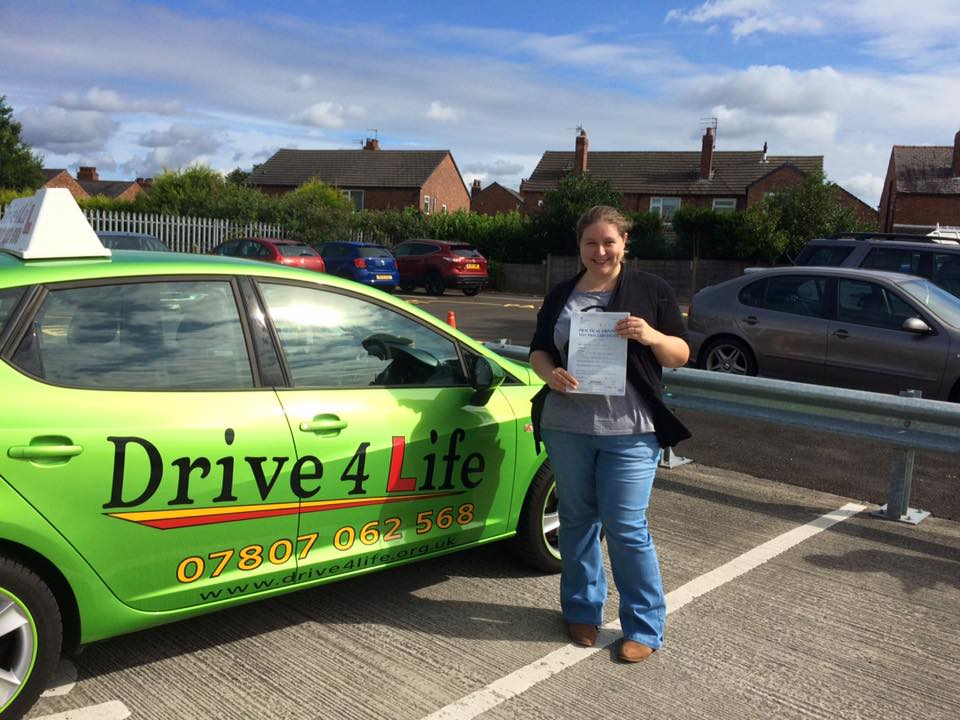

I would like to say a MASSIVE thank you to Sue for being my trusty driving instructor! Sue, learning to drive with you has been a wonderful experience with absolutely no stress and lots of giggles. You always believed in me and I can't thank you enough. I will definitely be recommending you to anybody looking for an instructor!
Sue has been a massive help to me after failing tests with a previous instructor, she has rebuilt my confidence and taught me much easier ways to carry out the manouevres. Patient, encouraging and friendly she has introduced me to thought field therapy (TFT) to help calm my test day nerves ,which although I was initially sceptical of was invaluable in the lead up to and on the day of my test. She was recommended to me by a friend and I wouldn't hesitate to recommend her as an extra supportive instructor. Many thanks again Sue!
Sue is the best driving instructor you could ask for! She is so calm and understanding and doesn't make you feel under any pressure. It helps to have an instructor that really understands the anxiety of driving for the first time and is the best support. Each lesson is so much fun and I ended every lesson feeling confident and happy. She never raised her voice no matter how many stupid mistakes I made sometimes! She uses a range of technology to help visualise situations, which is highly beneficial to the learning experience. While learning, I knew if I had a problem or wasn't feeling confident about a certain aspect of driving, I could easily talk to her and focus on what I needed to do to improve and feel confident in my own abilities. I would highly recommend Sue as I couldn't have wished for a better person to be around. I will really miss my lessons, and continue to drive feeling confident.

I've just passed with Sue Walker. I've had two driving instructors previously, but she was the only one who could give me the confidence to pass my test. She went the extra mile when my test was cancelled to July! Sue found me an earlier date at the beginning of June. She's really lovely and very understanding. Sue is also brilliant with nervous drivers., giving tips on how to control them! Would recommend her to anyone. Five stars from me!
Need to say a massive thank you to my driving instructor Sue Walker, I could really not recommend you enough!! Sue is the most patient person ever and has made learning to drive a really fun experience; she always tries her best to tailor everything to your needs, making you feel confident and safe! Thank you for being the best Sue!! I will miss you so much!
Sue has been a wonderful driving instructor and I would recommend her to anyone wanting to learn to drive. She is really friendly and easy to get along with and will have you laughing every lesson. Sue is always calm and patient even when you're having a bad driving day and always boosts your confidence. The progress books are a great tool of Sue's that help you keep track of how you are doing and the areas that still need improvement. Sue is great at instilling confidence and ensures you feel safe and confident in all areas of your driving. She also uses driving apps which are really useful at helping you understand road layouts and marking and the correct way to perform maneuvers. I can't thank her enough for being such a fantastic driving instructor and I would recommend her to anyone wanting to learn to drive. Thanks Sue! I'll miss our lessons x
Sue has been a complete miracle to me after having anxieties over driving, her patience and empathy is so admirable, she makes sure she identifies with your learning style and encourages you every step of the way. Although I feel proud of what I've achieved by passing, I will certainly miss chatting to Sue as she has been my rock through my nerves! I would recommend her to absolutely anyone who fancies learning to drive as you couldn't find a more kind, considerate and informative instructor for the job. Thank you Sue!
I highly recommend Drive For Life. As a more mature driving student, confidence was a big issue for me. I couldn't have found a better driving instructor. Sue's patience, understanding and expertise was fantastic. I found myself looking forward to my lessons each week and I was really happy with the progress I made. Lessons were relaxed, varied and very productive. Sue's genuine approach helped me overcome my nerves and pass my test with just one minor. Thanks Sue from the kids and I. I'm going to miss you!
I would like to say thank you to Sue Walker for helping me pass my Driving Practical Test, definitely the best driving instructor out there; and I would definitely recommend her! if you want someone who is calm and can teach you all the neat tricks to help you pass. Sue is friendly and easy going and you will have a lot of laughs on your lessons which puts you at ease.
I found learning to drive a really positive and enjoyable experience with drive 4 life. Although I know some people dread their driving lessons, I found myself looking forward to my lessons in college and always left them feeling positive and like I'd progressed. Sue is an amazing teacher, and was always patient with me even in stressful situations so I always felt safe and would ask any questions I needed to. I felt like we made a really lovely bond, which made the driving experience really enjoyable, and I know I'm going to miss my lessons! Thank you, Sue, for all your help, advice, and for getting me to pass my test first time!!
I've had a few instructors but none as good as Sue! She's got a great sense of humour and an immense amount of patience. I'm going to miss Sue so much, and I can't thank her enough for all she's done with me! I'm such a worry-wart but she really helped me with relaxation techniques which I'll also be using for years to come!!! Thank you so so much for getting me through this :) Xxxx
After previously having two instructors, I can honestly say I highly recommend Sue to anyone wishing to start driving lessons. I couldn't and wouldn't of done it without Sue and all the time, effort, patients, support, reassurance and encouragement you gave me. Still can't believe I have gone from been so nervous to passing my test! I can't thank you enough for everything you have done for me and I wish you all the best.

I had sue for 7 and a half months. I enjoyed every lesson I had and she always taught me something new. She is a great instructor and very patient and always willing to listen. I would recommend her to anyone. She made learning to drive seem really easy. Thank you Sue!
I started learning to drive with Sue a year ago after I saw her car in Stockport once I booked my lessons with Sue I felt more confident about driving every time I sat in the driver’s seat. After 2 months of driving with Sue I never got nervous about driving Sue is the best driving instructor you could ever have because she doesn’t just treat you as at client she treats you as a friend. She likes to talk a lot about her life and listens about your life as well it is never a dull lesson with Sue you will always have a barrel of laughs every lesson. If you fail your theory test or your driving test she never puts you down she asks whether she can help you I failed my theory twice but she never put me down she just helps you out. I went for my driving test at the beginning of September and passed first time I had Sue in the back of the car because I felt less nervous with her in the car. Just as at future reference if Sue does sit in the car behind you on your driving test and you have passed just be ready for a bear hug from behind. But one thing I will miss is driving with Sue if you’re looking for the best driving instructor in greater Manchester your on the right website.
I'd tried twice to learn to drive before I found Sue, neither time I felt comfortable and panicked before every lesson and before long I just gave up! From my first lesson with Sue I felt comfortable in the car and by the end of the lesson was even confident I could finally get my licence. I actually looked forward to lessons because they never felt like lessons just like I was driving with a friend and a lot of the time we found things to laugh at that kept me relaxed when I was struggling with something. Finding drive for life was the best thing I ever did and I'm definitely going to miss Sue and my weekly lessons, I know without her I never would have gained the confidence to pass my test! Thank you so much Sue you really are an awesome instructor.

I started driving lessons with Sue after my brother and sister both had her as a driving instructor. They'd told me brilliant stories about Sue, how lessons with her were very progressive and how they got along with her so well. As they'd made such good friends with Sue it made me worried that I wouldn't when I started my lessons, but from the minute I sat down in her car, everything they had said had been true and I felt completely comfortable. I looked forward to my lessons each week due to Sue making my lessons fun and helping to build my confidence. In fact now I miss them. Sue was always very understanding when organising lessons, as she knew it had to fit around my busy schedule due to my test being close to my A level exams. In lessons she explained things clearly but not in a way that made it patronising, she knew what you were capable of and pushed you to improve but only if you were comfortable. Although I failed my test first time, Sue did not make me feel down hearted. As she had come with me on the test she knew what I needed to improve, so we worked on that each week and she taught me relaxation techniques to calm myself down before my second test and I passed with only 1 minor!! I would 100% recommend Sue to anyone who is looking for a driving instructor she is fantastic! I'm going to miss you Sue!
Before driving with Sue I had two other driving instructors which I never managed to stick with.mI had seen Sues car go past my work a few times so spur of the moment grabbed the name and googled! I was very nervous on our first meeting as I suffer with panic attacks & have done for the past ten years! Explaining to anyone about them is hard but explaining to someone who is going to teach you something is even harder! I wondered if Sue would have the patience for me & my attacks- turns out she did.. And much more! I found that learning with Sue was an easy & very comfortable atmosphere, she literally has more patience than I could ever ask for! I found out that I got along great with her as she's very easy going & up for a laugh as well as being a stern (when needed) teacher! She'd correct me if I was wrong but gently as she respected how nervous I am as a person, most importantly though she praised me when it was due to make me realise that I'm doing a great job! She understood what I needed during the lesson & made me feel very safe & I put my full trust in her! I feel so proud that I passed first time (with only 3 minors!) when I got back to the test centre Sue had already got the well done card ready which proved to me how much faith she had in me & had all along! I would highly recommend Drive4life because Sue is an excellent teacher & a genuinely lovely person to be around which made my lessons enjoyable & great to do!
Sue Walker has been an amazing driving instructor throughout the process of me learning how to drive. She has been patient and comforting to learn alongside and I have enjoyed the whole experience of driving. I highly recommend Sue for anyone who is or wants to learn how to drive.
I was recommended sue from a friend and was so glad that I was. She was a fantastic driving instructor, friendly, very easy to get along with and made me feel relaxed in the car from my very first lesson. She was always patient with me and never let me get down on my self when I made mistakes, keeping my confidence up and never letting me feel like giving up. Sue became a friend as well as an instructor and I can't wait to continue with sue on pass plus. I wouldn't consider doing further driving with anyone else now I've met Sue.
I cannot thank Sue enough, not only is she an amazing driving instructor, she also helped me with my confidence and my nerves. From the first time I got in the car with Sue I felt completely comfortable, she is a friendly, warm and so chatty. I genuinely feel as though I have gained a friend. She is patient and never gets irritated or annoyed even if you do the complete wrong thing. She is calm, clear in her instructions and doesn't put any pressure on your driving. She uses lots of different methods to help you understand exactly what to do. Nothing is ever too much trouble! Before the test she is such a star and really helps you relax and feel as though you can do it!! I couldn't recommend her enough. I will miss seeing you every week Sue, and thank you so much for everything you have done.
I started driving with Sue after my sister had such a good experience with her. Sue is such an amazing instructor who is so patient and friendly and I feel like I've made a true friend! I was a really nervous driver and Sue helped to build my confidence so much and now I actually love driving. The instructions Sue gave were always really clear and I really couldn't recommend her enough! I look forward to seeing Sue again when I return from uni for motorway lessons. Thank you so much Sue!
Sue, thank you so much for believing in me when I didn't. You are such a lovely hard working person! You would never get annoyed or impatient whenever I constantly stalled the car or the times when I did my manoeuvres and I would be going in the wrong way! You hammered everything I needed to know about driving and how to pass! Thank you again, I will miss my driving lessons!
Sue is an amazing instructor she's calm, really friendly, patient, helps you with any mistakes and doesn't panic when you get your lefts and rights mixed up. She uses apps, diagrams and pics to help explain and demonstrate complex things which was so helpful and takes the time to email you a copy to keep. You feel like your driving round with a mate not just an instructor and you learn so much on everyday driving not just to get you through your test. The TFT is really helpful and works, I used it when I was starting my lessons and then again for my test I'd def. recommend people try it and that you have Sue with you during your test, I felt like I was in a lesson with her in the back and that the examiner was just someone we were giving a lift. I'm ecstatic she taught me and that I've passed my test but I'll miss her too. I can't thank or praise her enough. If you want to learn real driving with a fab. person then get in touch with Sue. Well it hadn't even been 24 hours after I passed my test before I was back in touch with Sue about Pass Plus. Yet again she was an amazing instructor & taught real driving skills in a way that was easy to understand and remember, as well as being fun to drive with. Even if you don't get a discount from insurers I would recommend that everyone does Pass Plus no matter your age, it's well worth doing and you should have Sue teach you. Thanks Sue